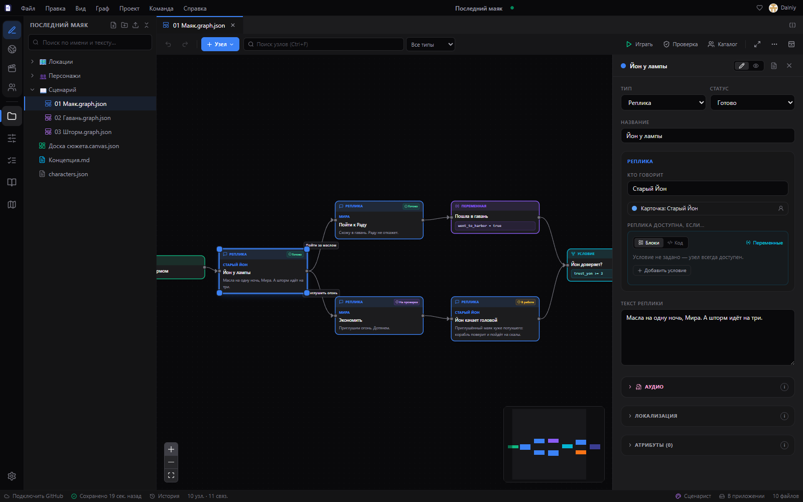

Пишите истории. Стройте миры. Не теряйте нить.
Рабочая среда нарративного дизайнера и сценариста: графы диалогов и квестов, база персонажей, холст, проверка сценария и командная работа через GitHub — бесплатно и без своего сервера.
Windows 10/11 • Android • Бесплатно, закрытый код

Всё для истории — в одном окне
Девять сред, которые обычно живут в разных программах, здесь работают вместе с одним проектом.
Кому это пригодится
Программа в деле
Щёлкните по снимку, чтобы рассмотреть крупнее.
Что готовим дальше
Над чем идёт работа и что запланировано. Список обновляется вместе с программой.
Коротко о главном
Это правда бесплатно?
Да. Без подписок, рекламы и платных функций: все возможности доступны сразу. Поддержать разработку можно по желанию — на Boosty или разовым донатом.
Где хранятся мои проекты?
У вас: папкой на диске или внутри программы. Графы и документы — обычные файлы JSON и Markdown, их можно открыть и без Narrata. Ничего не уходит в интернет, пока вы сами не подключите репозиторий GitHub.
Нужен ли сервер или аккаунт?
Нет. Программа работает без аккаунта и без сервера. GitHub нужен, только если хотите синхронизацию между устройствами или командную работу — хватит бесплатного репозитория.
Чем отличается от Twine, Ink или articy:draft?
Narrata — рабочая среда целиком: граф, персонажи, документы и холст в одном проекте, с проверкой сценария и командной работой. Ink и Yarn Spinner — языки сценариев, и Narrata в них экспортирует; из Twine и Ink можно импортировать. От articy:draft отличается тем, что бесплатна и хранит проект обычными файлами.
Windows пишет «Неизвестный издатель». Это нормально?
Да. У установщика пока нет платной цифровой подписи. Нажмите «Подробнее» → «Выполнить в любом случае». Файлы выкладываются только на странице релизов GitHub — скачивайте оттуда.
Работает ли на телефоне?
Да, есть версия для Android с теми же проектами и самообновлением. Удобнее всего на планшете: графу и холсту нужен простор.
Готовы начать?
Скачайте Narrata бесплатно для Windows или Android.
На Android рекомендуется планшет: на телефоне всё работает, но графам и холсту на большом экране просторнее.
Сборки для вашей системы нет — доступны Windows и Android.
- Windows 10 (1809) или 11, 64-бит
- 4 ГБ памяти, 400 МБ на диске
- Обновляется сама, без прав администратора
- Рекомендуется для планшетов
- Android 7.0 и новее
- Свежий Android System WebView
- Только стабильные версии — беты выходят для Windows
Программа с закрытым исходным кодом. Лицензионное соглашение · История изменений